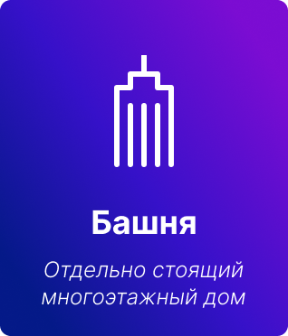
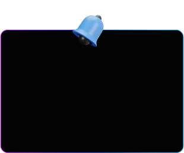

Культура и язык московского региона
По данным Росстата сегодня в Москве проживает примерно 13 миллионов человек. В Московской области – порядка 9 миллионов. Все они говорят по-русски. И всё же – не совсем на одном и том же языке...
О проекте
Мы рассмотрим некоторые данные языка жителей Москвы и Подмосковья, чтобы лучше понять, как речь жителей Московского региона менялась с течением истории и какие особенности были ей свойственны в то или иное время. Это основная задача и цель нашего проекта.
Каковы предпосылки?
В основе культуры каждого народа лежит язык. Язык служит средством общения людей и выражения мыслей. История языка тесно связана с историей народа. В каждом регионе нашей страны есть свои особенности используемых слов и произношения.
Например в Московском регионе есть слова, которые используют в три раза больше людей, чем в среднем по стране.
Московское произношение
Москвичей и жителей Подмосковья можно узнать по характерному произношению. Если спросить жителей других регионов: «Чем отличается московское произношение от других?», то в ответ, скорее всего, можно услышать: «Много “акают”».
мАлАко

сАбАкА

кАровА
Немного
из истории
Но так было не всегда. Ведь Московское произношение возникло не сразу, а складывалось веками.
Изначально его основой было произношение восточно-славянского племени кливичей (близкое к произношению славян новгородских). Москвичи до 16 века «окали».
C 16 до 19 века существовали две нормы произношения одновременно: одна – литературная, другая – свойственная разговорной речи.
И лишь в 19 веке произносительные нормы литературного языка стали полностью определяться живой московской речью.
С конца 19 века московское произношение пережило многие изменения, но сохранило все свои основные особенности:
Щ, СЧ, ЖЖ, ЗЖ, ЖД, произносится как Ш и Ж мягкие и долгие:
щи, счёт, дождь и др.
Произношение ЧН возможно как [шн], например: скучно (гречневый, булочная, молочный - устаревшие).

...а так же “аканье”
и особый темп речи.
Как это звучит?
Можно ли в наше время услышать московскую речь периода “оканья”? В Московской области вряд ли, но в других областях России такое произношение сохраняется до сих пор. Можно, например, отчетливо различить, как жители некоторых районов Поволжья говорят, делая акценты на “о”. Ученые записывают и каталогизируют различные типы произношения, чтобы сохранять и изучать историю нашего языка. Давайте послушаем.
Краткие выводы
Мы все говорим на русском языке, но в каждом регионе нашей большой страны есть свои особенности произношения и особенные слова, которые используют жители.
Русский язык живой, он меняется: появляются новые слова, новые понятия. Развитие языка тесно связано с историей.
О нас
Мария Гулла.
Ученица 8-го "Е" класса ГБОУ 2005
г. Москвы.
Варвара Иванова.
Ученица 8-го "Е" класса ГБОУ 2005
г. Москвы.